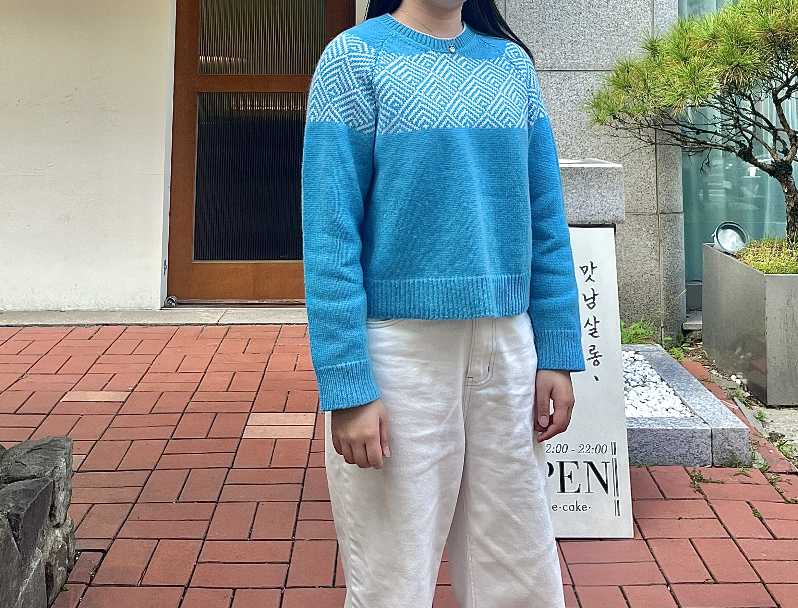

Minji Portfolio
Inspired by Cities
Bagnoire de Urbanic Perfume in Milano, Italy
Baignoire de Urbanic Perfume
누군가로부터의 소중한 편지처럼, 봉인된 봉투 모양의 하늘색 상자 안에 얼바닉의 향을 담아 소개합니다. ‘베누아 드 얼바닉(Baignoire de Urbanic)‘은 손과 몸을 단장하는 일상의 루틴에 산뜻하고 기분 좋은 순간을 선사하고자 탄생한 얼바닉의 첫 번째 향수입니다.

Ski Cowichan Cardigan by Kanata (Navy)
매서운 바람이 부는 계절에 더욱 그 매력이 돋보이는 스키 코위찬 카디건(Ski Cowichan Cardigan)입니다. 짙은 네이비 컬러의 바탕 위에 하얀 눈송이처럼 맑은 아이보리 색실로 스키 패턴을 군데군데 넣어, 과한 느낌 없이 캐주얼한 옷차림에 쿨한 분위기를 연출합니다.
Tribeca Denim Pants by Okayama (Light Blue)
셔츠나 니트 등 다양한 아이템과 어울림이 좋은 ‘트라이베카 데님 팬츠(Tribeca Denim Pants)’입니다. 밑위길이는 길지 않은 편이며, 허리와 힙이 슬림하게 잘 맞는 날씬한 스트레이트 핏을 갖고 있어 기본 아이템으로 입기 좋은 데님 팬츠입니다.
Berlin Skirt
멋부리지 않은 클래식한 소재와 정갈한 실루엣이 아름다운 베를린 스커트(Berlin Skirt)입니다. 무릎 아래까지 깔끔하게 떨어지는 심플한 H 라인의 스커트로, 실루엣이 둔탁해 보이지 않게 지퍼와 후크를 뒤쪽에 배치하고 움직임이 편하도록 뒤트임을 더했습니다.
Black Watch Coat
체크 패턴의 클래식하고 깊은 멋을 담은 블랙 와치 코트(Black Watch Coat)입니다. 더블브레스트를 이룬 소뿔 단추들, 큼직한 플랩 패치 포켓, 체크 패턴과 블랙 컬러가 대비를 이룬 더블 페이스 원단이 어우러져 중성적이면서도 단아한 분위기를 선사합니다.